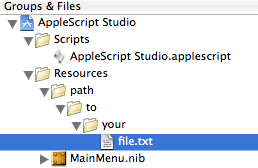

|
Q: How do I access files contained in my AppleScript Studio application's main bundle?A: If you have files in your AppleScript Studio application's bundle (that is, in your Resources folder under Groups & Files (see Figure 1), you can access them by using " Figure 1: Groups & Files showing pathname hierarchy.  Listing 1: Using 'resource path of main bundle' set myFile to (resource path of main bundle) & "/path/to/your/file.txt" When you run this, For more information on bundles in AppleScript Studio, see the Application Suite > Terminology > bundle section of "AppleScript Studio Terminology Reference"; you can find it in the ADC Reference Library at Reference > AppleScript > Tools. Document Revision History
Posted: 2007-02-05 |
|